Payfast by Network
Two-month Product Design internship at a South African fintech — the country's second-largest online payments platform, serving 0+ merchant businesses. Two projects across product UI and service design; each selected by the team as the final design. What ultimately shipped to production varied — noted with each.
Merchant App Store Listings
The merchant app was being rebranded alongside Payfast's identity rollout. The team needed updated app store listings — the screens and banner that appear on Google Play and the App Store — to carry the new brand into the surface where merchants first encounter the app.
I started by deciding what counted as the brief.
The brief
Two deliverables: a four-screen carousel of the rebranded app in device mockups, and a banner image. Both had to align with the new identity while staying recognizable to existing merchants. The pre-rebrand listing materials were available as a baseline.
Looking outside the brief
I started by studying listings that weren't ours. Spotify and Netflix for treatments that worked at scale. Yoco — Payfast's main competitor in South African payments — for what conventions our category followed.
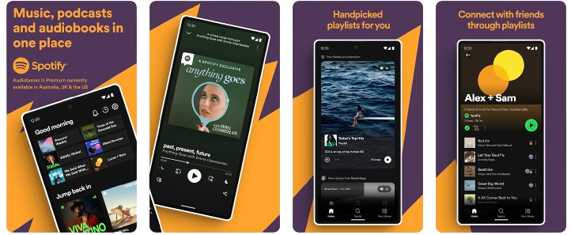
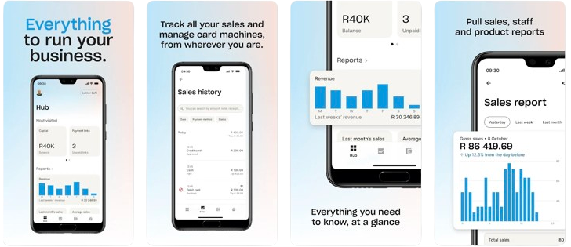
Spotify did something I hadn't seen in fintech: a single visual ran behind all four screens of the carousel — threading them into one sequence instead of four disconnected moments. Could that move travel?
Yoco was the opposite logic. Clean mockups, gradient backgrounds, payment-focused screen selection. Anchored in category vocabulary. Different approach, both correct.
Retain, innovate, adapt
The scan resolved into three columns, not two.
From the pre-rebrand: centered phone mockups, screen-bottom captions, four-screen carousel structure. Familiar to existing merchants.
From Spotify: the continuous background threading across screens. Fragmentation turned into sequence.
From Yoco: gradient backgrounds replacing the pre-rebrand's solid colors. Category convention with the new palette.
The central decision
The continuous background needed material. I used Payfast's chevron — already part of the new brand system — as the repeating element, oriented and gradient-shifted across screens so the pattern flowed without dominating individual frames.
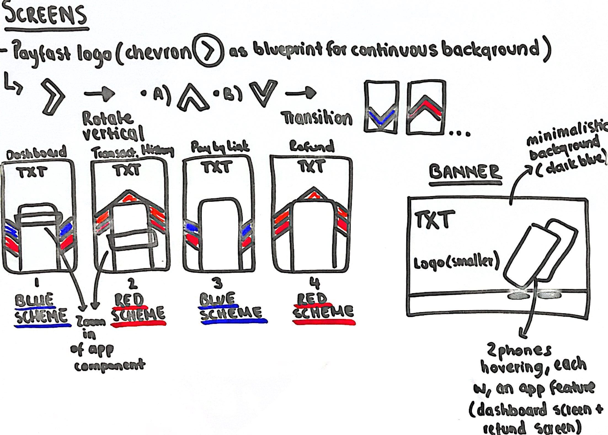
This is the decision I'd point to first. Not the most ambitious move — but the one that made the rest of the project feel coherent.
Final designs
Selected as the final designs. Launched alongside the rebranded merchant app in October 2024.
Cause Index Platform Redesign
The Cause Index is Payfast's donation platform — the tool merchants use to give to South African nonprofits. The rebrand required a full visual update.
The interesting question was underneath.
How do you redesign a donation page in a way that actually changes the likelihood someone donates?
The brief
Three goals from the team: align the platform with the new brand identity, streamline navigation, and incorporate design elements that would encourage merchant donations rather than just display them.
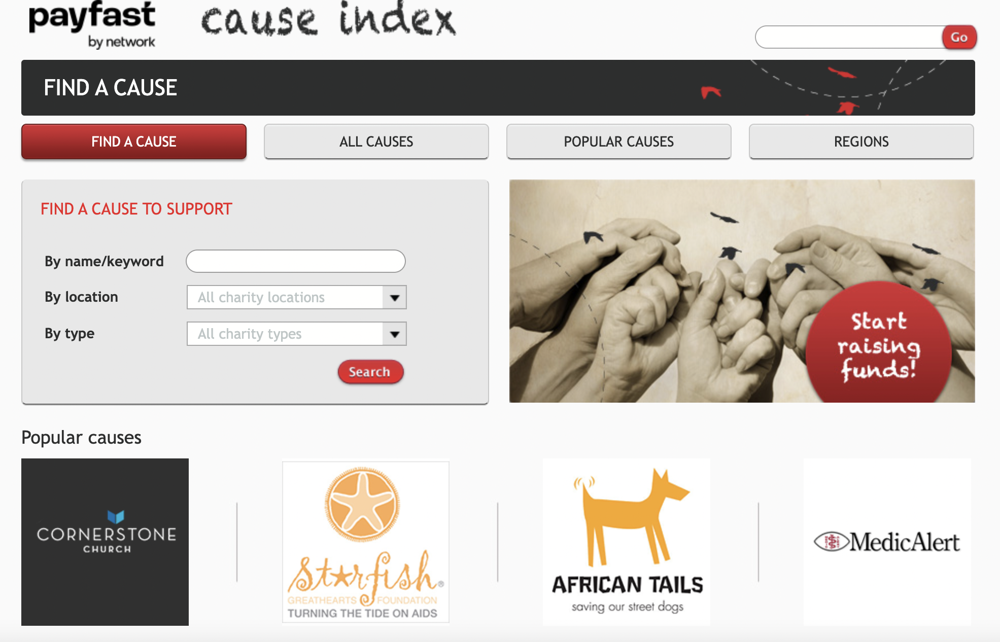
The reframe that mattered
The third goal was where the project opened up. Shift the platform's goal from providing a space for donations to actively encouraging them.
Same brief, completely different orientation.
Cognitive design research
What someone perceives, what they remember, what they feel ready to act on.
I built a research document examining three layers. Visual components: which images actually move people toward giving — evocative over abstract, faces over logos. Layout structures: how content sequencing affects readiness — need first, then story, then specific ask. Wording: how language framing shapes urgency — immediate over ongoing, specific over abstract.
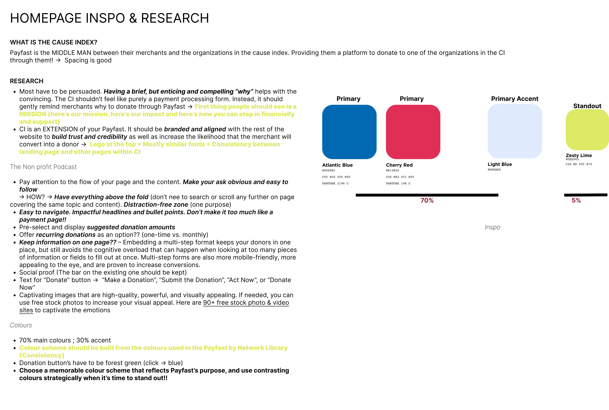
The research surfaced a principle worth naming: donations can be driven by design. Specific elements followed — clear and impactful mission statement, evocative imagery, urgent call-to-action language. These became the design ethos for every page that came after.
Streamlining the navigation
The original platform had All Causes, Popular Causes, and Causes by Region as three separate top-level navigation entries. Three entry points for the same kind of thing.
I consolidated them under a single Causes nav with dropdown selection — same pages, one entry point instead of three.
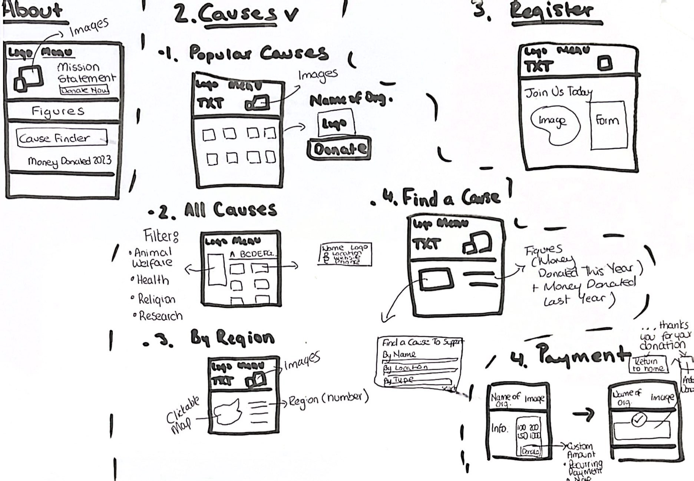
Two features from my own design thinking
Registration
The original had no way for merchants to register affiliated organizations. I designed a registration page from scratch.
If a merchant has registered the cause they care about, the abstract "donate" becomes concrete.
All Causes, rebuilt
The original required endless scrolling to find a specific cause and lacked organization. I rebuilt the page — causes organized alphabetically, with filters by type (animal welfare, health, education, research) and location.
Recognition over recall.
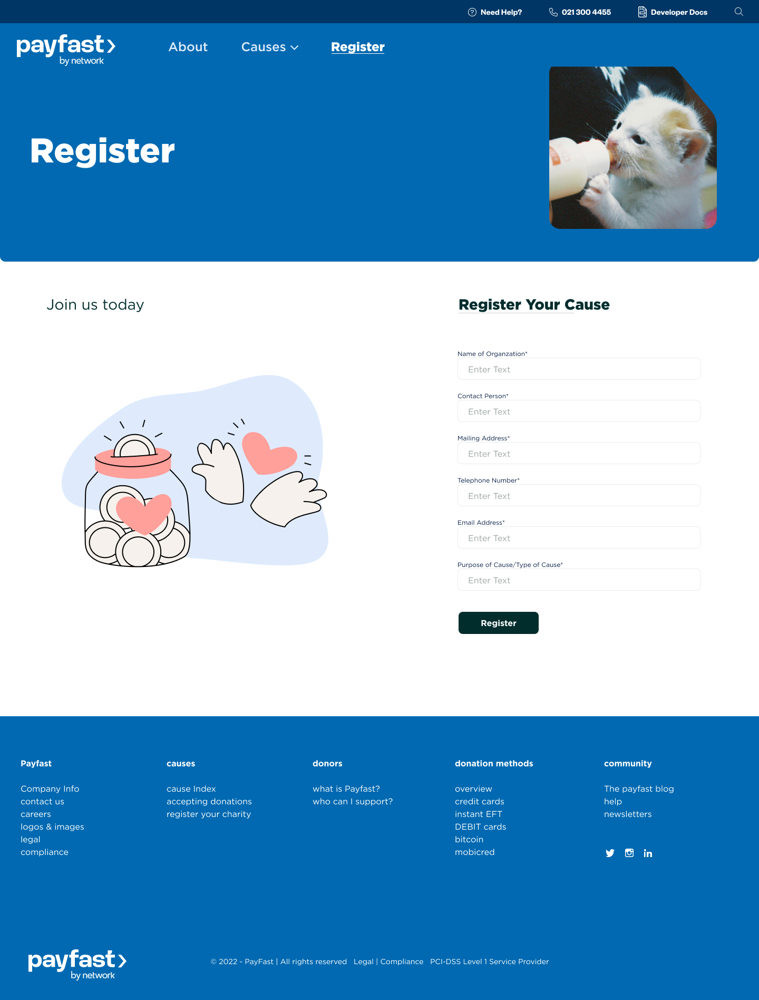
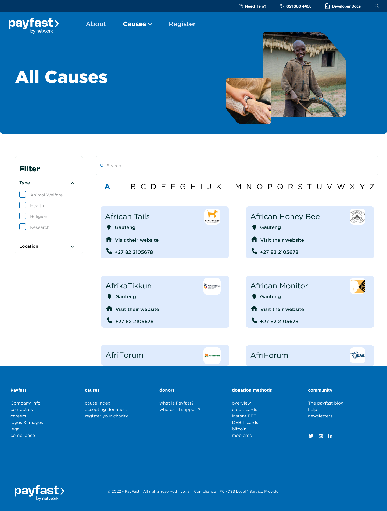
Final designs
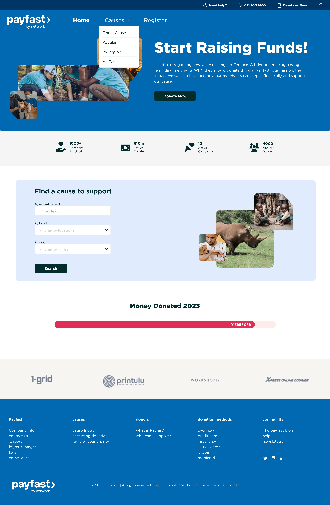
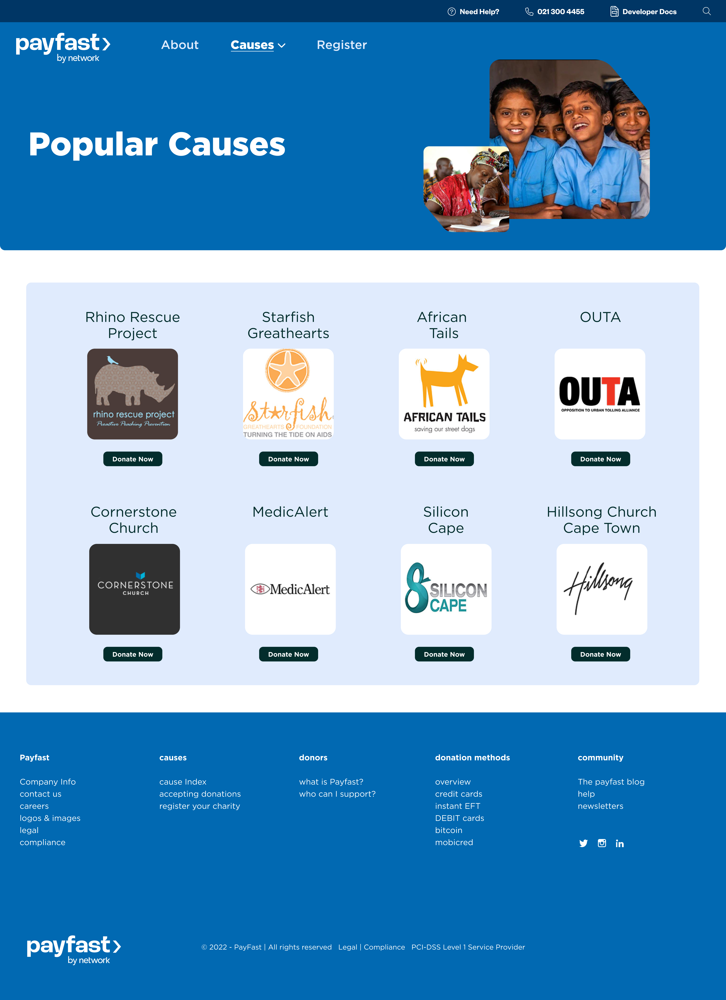
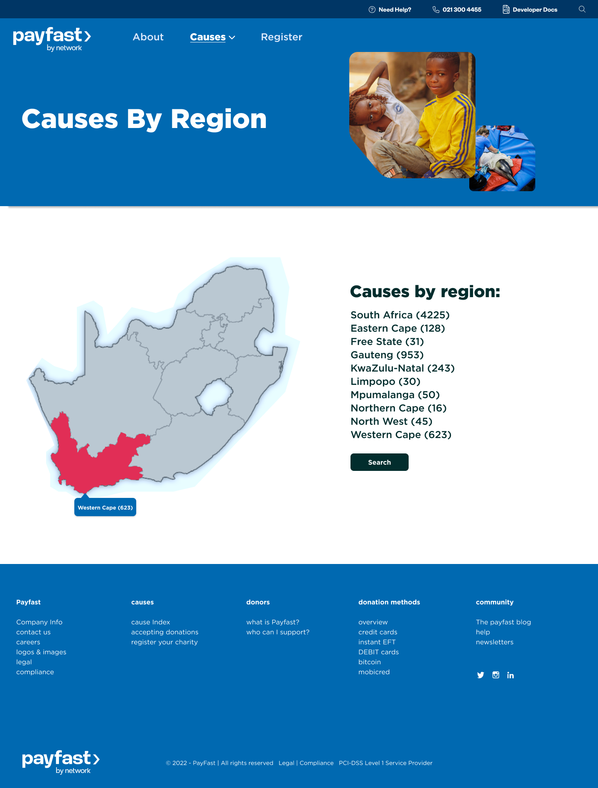
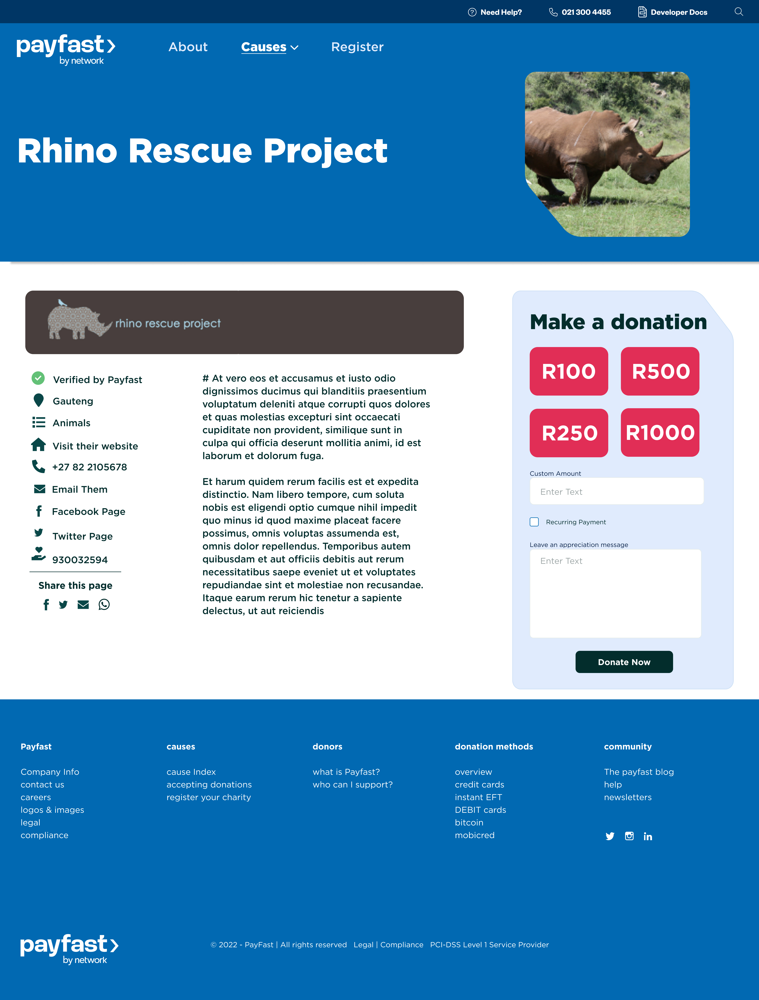
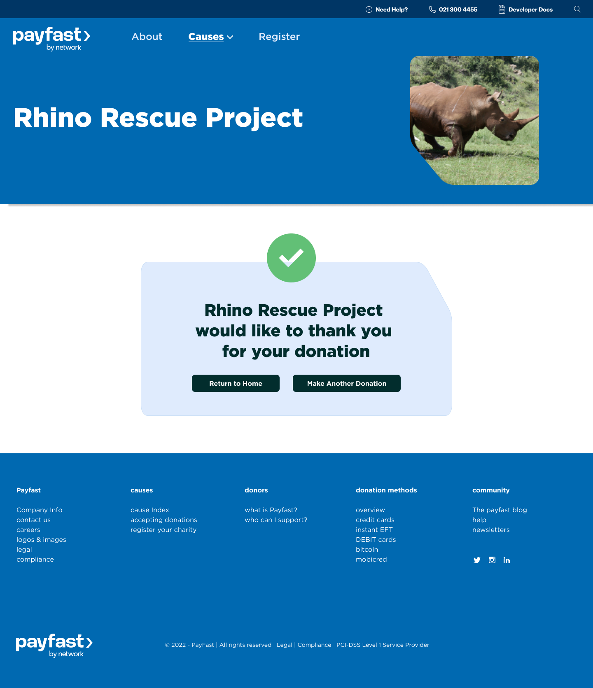
Looking back, this is the project where I first thought about design as a cognitive question. It was years before I named that as my practice — but the move was already there.
Selected as the final designs. The platform update was later shelved.